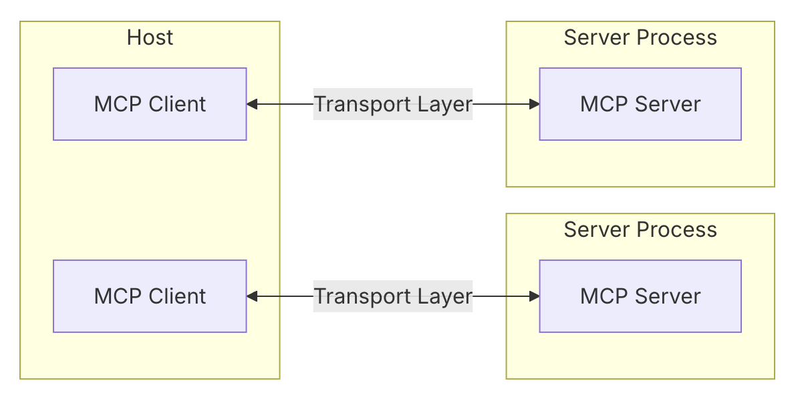

Formation MCP
Les API du Futur pour l'Intelligence Artificielle
Donnez des super-pouvoirs à vos agents IA
Une journée pour comprendre et expérimenter
Notes pour l'introduction
Souhaitez la bienvenue aux participants
Présentez-vous et présentez les objectifs de la journée
Expliquez le format: théorie le matin, pratique l'après-midi
Demandez qui a déjà utilisé des LLMs ou MCP
Programme de la journée
Matinée: Fondamentaux
8h30 - 9h00 : Accueil
9h00 - 10h30 : Plénière MCP
10h30 - 10h45 : Pause
10h45 - 12h30 : Démos & Cas d'usage
Après-midi: Pratique
13h30 - 16h30 : Ateliers pratiques
16h30 - 17h30 : Restitution
Objectifs
Comprendre les fondamentaux des LLMs et du MCP
Maîtriser le fonctionnement technique des appels au LLM
Découvrir les cas d'usage concrets
Expérimenter la création d'outils MCP
Audience et attentes
üßë‚Äçüíª Pour les d√©veloppeurs
Comprendre le fonctionnement technique
Créer des outils MCP efficaces
Intégrer MCP dans l'architecture existante
üß™ Pour les data scientists
Exploiter les capacités des LLMs
Enrichir les modèles avec des données réelles
Créer des agents IA plus performants
üíº Pour les profils m√©tiers
Comprendre les possibilités offertes
Identifier les cas d'usage à valeur
Définir les besoins business
üí° Notre approche
Travailler ensemble sur des cas concrets
Les équipes mixtes favorisent des solutions complètes
1. Comprendre les LLMs: Le Langage est la clé
L'importance du "L" dans LLM
L arge L anguage M odelLe langage est l'interface naturelle entre humains
Les LLMs comprennent et génèrent du texte comme un humain
Nous passons de la programmation à la conversation
Transformation fondamentale:
Code → Texte
Requêtes → Questions
Inputs/Outputs → Dialogues
API → Conversation
Moteur d'inférence: le cerveau du LLM
Comment fonctionne un LLM:
L'inférence est le processus de génération de réponses
Prédiction du mot suivant le plus probable
Basé sur les milliards de paramètres appris
Les performances dépendent de la taille du modèle et de sa qualité d'entraînement
Utilisateur: Quel est la capitale de la France?
Moteur d'inférence: [calcule la probabilité des mots suivants]
"La" (5%)
"capitale" (12%)
"de" (8%)
"la" (11%)
"France" (20%)
"est" (95%)
"Paris" (99%)
Context Window: la mémoire temporaire du LLM
Espace "mémoire" pour la conversation en cours
Limitée en taille (4K-128K tokens selon modèles)
Tout ce qui est hors context window est oublié
Impact direct sur la pertinence des réponses
Analogie:
La context window est comme...
La mémoire à court terme humaine
Une page blanche limitée
Un tableau qui s'efface quand il est plein
Caractéristique fondamentale: LLMs sont Stateless
Qu'est-ce que "stateless"?
Pas de mémoire persistante entre les appels
Tout contexte doit être explicitement fourni
Comme une personne avec amnésie à court terme
Grande limitation pour les agents autonomes
Appel 1:
Utilisateur: "Mon nom est Olivier"
LLM: "Bonjour Olivier!"
Appel 2 (nouveau contexte):
Utilisateur: "Quel est mon nom?"
LLM: "Je ne connais pas votre nom,
vous ne me l'avez pas dit."
La puissance des fonctions avec les LLMs
Les fonctions permettent au LLM d'agir sur le monde
Le LLM génère du JSON pour appeler une fonction
Le serveur exécute et renvoie le résultat
C'est ce qui transforme un modèle en agent
// Définition de la fonction
{
"name": "get_weather",
"description": "Obtenir la météo",
"parameters": {
"location": {
"type": "string",
"description": "La ville"
}
}
}
// Appel par le LLM
{
"name": "get_weather",
"arguments": {
"location": "Paris"
}
}
sequenceDiagram
participant User
participant Inference Engine
participant LLM
participant MCP Client
participant MCP Server
User->>Inference Engine: Requête (ex: Météo Paris?)
Inference Engine->>LLM: Transmet la requête
LLM-->>Inference Engine: Génère texte avec appel fonction (get_weather, location: Paris)
Inference Engine->>MCP Client: Extrait et exécute l'appel fonction
MCP Client->>MCP Server: Exécute l'appel get_weather(Paris)
MCP Server-->>MCP Client: Résultat (ex: 25°C, ensoleillé)
MCP Client-->>Inference Engine: Fournit le résultat de la fonction
Inference Engine->>LLM: Transmet le résultat pour formulation finale
LLM-->>Inference Engine: Génère réponse avec le résultat intégré
Inference Engine->>User: Réponse finale (ex: Il fait 25°C à Paris.)
Le défi de l'intégration des fonctions
Problèmes actuels:
Nécessite de modifier le serveur d'inférence
Couplage fort entre LLM et fonctionsDifficulté pour ajouter de nouvelles capacités
Besoin d'une approche standardisée
Solutions:
Plugins/Add-ons : Architecture extensibleAPI standardisées : DécouplageMCP : Protocole universelPassage de l'intégration à l'interopérabilité
Et c'est exactement ce que résout le Model Context Protocol (MCP)!
2. Introduction au MCP: La lingua franca des agents IA
L'architecture MCP en un coup d'œil

Hôte : ChatGPT, Claude, etc. qui contient le modèle de langage
Client MCP : "traducteur universel" entre l'IA et les outils
Serveurs MCP : exposent différents outils et capacités
MCP rend les outils numériques visibles et utilisables par n'importe quelle IA
MCP: Le langage universel des outils pour IA
Lancé fin 2024 par Anthropic , rapidement adopté
Un standard ouvert permettant aux IA de découvrir et d'utiliser des outils externes de manière autonome et standardisée Donne un mode d'emploi autodescriptif pour chaque fonction
Les IA deviennent enfin agents capables d'agir!
{
"function_name": "get_weather",
"description": "Récupère la météo pour un lieu.",
"arguments": [
{
"name": "location",
"type": "string",
"description": "La ville à consulter."
}
]
}
Les 3 super-pouvoirs que MCP donne aux outils
Le trio magique du MCP
üëÅÔ∏è 1. Resources
Les yeux de l'IAAccès en lecture aux données
Ex: lire un profil, consulter un prix
✋ 2. Actions
Les mains de l'IAModifier l'environnement
Ex: envoyer un email, réserver
ü߆ 3. Prompts
Le mode d'emploi Guide l'IA dans l'utilisation
Le composant souvent négligé mais crucial!
C'est l'association des trois qui crée la vraie puissance!
La règle des 3U: créer des outils que les IA utiliseront vraiment
üéØ Useful (Utile)
Résout un vrai problème
Apporte une valeur unique
A un but clair
üîå Usable (Utilisable)
Techniquement accessible
Suit le standard MCP
Interface bien définie
üëÜ Used (Utilis√©) - Le plus souvent n√©glig√©!
L'IA choisit réellement d'utiliser votre outil
Clarté des noms, descriptions et exemples
Les Prompts MCP sont la clé du succès ici
3. MCP: Les API REST du futur
Une analogie puissante
üßë‚Äçüíª API REST = r√©volution du Web
Pour les humains
A propulsé les applications web
Interfaces pour les développeurs
ü§ñ MCP = r√©volution des agents
Pour les IA
Va propulser les agents autonomes
Interfaces pour les modèles de langage
API REST
MCP
GET (lecture)Resources (lecture)
POST (action)Actions (action)
n'existe pas Prompts (guide)
Les prompts: le secret d'un outil MCP réussi
ü߆ Ce qu'ils font:
Guident l'IA vers le bon outil au bon moment
Fournissent un mode d'emploi contextuel
Définissent des workflows spécifiques
üìä Exemple d'usage:
Graphe de connaissances structuré
Ontologie commune pour la cohérence
Vocabulaire standardisé (au lieu de synonymes aléatoires)
Sans bons prompts, même l'outil le plus utile sera ignoré par l'IA!
Exemple : Sans prompt guidé, l'IA pourrait utiliser "créer_ticket" ou "log_issue". Avec un prompt spécifiant l'ontologie, elle utilisera toujours "enregistrer_incident(description, priorité)".
10h30 - 10h45 : Pause café ☕
État actuel de l'adoption du MCP
MCP aujourd'hui: déjà une réalité
üöÄ Adoption rapide:
Standard adopté par tous les grands acteurs : Anthropic, OpenAI, Google
Momentum croissant dans l'industrie du logiciel
Intégrations multiplateformes en cours
üõ†Ô∏è O√π le voir en action:
Outils dev : Claude Code, Cursor, GitHub CopilotPlateformes : Salesforce Einstein, ServiceNowSystèmes internes : Bases de connaissances, CI/CD
⚠️ Le moment critique: être présent dès maintenant
Les premiers à maîtriser MCP créeront les outils qui deviendront incontournables
Cas d'usage de mémoire collective
ü߆ Aujourd'hui
Chaque IA a sa propre mémoire isolée
üîÑ Probl√®mes
Perte de contexte entre sessions
Duplication du travail d'équipe
Inconsistance des connaissances
Pas de mémoire institutionnelle
üöÄ Solution MCP
Mémoire partagée
MCP KB
Graphe de connaissances partagé via MCP
Bénéfices concrets:
Les IA ont accès aux décisions architecturales de l'équipe
Chaque interaction enrichit la base commune
Les bonnes pratiques sont automatiquement partagées
Les nouveaux membres bénéficient immédiatement du savoir collectif
Démonstration technique du MCP
Anatomie d'un serveur MCP
Structure de base
// Exemple simplifié d'un serveur MCP en Node.js
const express = require('express');
const app = express();
app.use(express.json());
// Définition des fonctions disponibles
const functions = {
get_weather: {
description: "Récupère la météo pour un lieu",
arguments: [{
name: "location",
type: "string",
description: "La ville à consulter"
}]
}
};
// Endpoint de découverte des capacités
app.get('/mcp/capabilities', (req, res) => {
res.json({ functions });
});
// Endpoint d'exécution
app.post('/mcp/execute', (req, res) => {
const { function_name, arguments } = req.body;
// Exécution de la fonction
if (function_name === 'get_weather') {
const weather = getWeatherData(arguments.location);
res.json({ result: weather });
} else {
res.status(400).json({ error: 'Function not found' });
}
});
app.listen(3000);
Communication entre client et serveur MCP
sequenceDiagram
participant Client as MCP Client
participant Server as MCP Server
Client->>Server: GET /mcp/capabilities
Server-->>Client: { functions: [...] }
Client->>Server: POST /mcp/execute { function_name, arguments }
Server-->>Client: { result: ... }
Points clés:
Protocol JSON-RPC sous-jacent
Auto-découverte des capacitésFormat standardisé des réponses
Défis:
Authentification sécuriséeGestion des erreurs
Monitoring et observabilité
Défis de sécurité et d'authentification
üîê Mod√®les d'authentification
OAuth 2.0 pour l'authentification
JWT pour la transmission sécurisée
API Keys pour les intégrations simples
üõ°Ô∏è Mod√®les d'autorisation
RBAC (Role-Based Access Control)
Limitations par utilisateur/application
Audit logging des appels
⚠️ Risques spécifiques
Prompt injection via les arguments
Fuite d'informations sensibles
Utilisation excessive de ressources
üí° Bonnes pratiques
Valider rigoureusement les entrées
Limiter la portée des accès
Implémenter des quotas et rate limiting
Discussion et questions
Points à discuter:
Quels cas d'usage potentiels identifiez-vous dans votre contexte?
Quelles difficultés d'implémentation anticipez-vous?
Comment la gouvernance MCP pourrait être mise en place?
Préparation aux ateliers de l'après-midi
Nous allons explorer trois cas d'usage pratiques:
Accès à une base de connaissances interne
Interface en langage naturel pour des requêtes SQL
Automatisation de tâches administratives
Programme de l'après-midi: Ateliers pratiques
Organisation des ateliers
üë• Constitution des groupes
Équipes mixtes de 4-5 personnes
Au moins un développeur par groupe
Mélange de profils techniques et métiers
⏱️ Planning
13h30 - 14h00: Présentation des cas d'usage
14h00 - 16h00: Travail en groupes
16h00 - 16h30: Finalisation
16h30 - 17h30: Restitution et discussion
üõ†Ô∏è Environnement de travail
Chaque groupe disposera de:
Un environnement de développement préconfiguré
Des templates de serveurs MCP
L'accès à des instances de test de LLMs
Un accompagnement des formateurs
Cas d'usage 1: Base de connaissances interne
üéØ Objectif
Créer un serveur MCP qui permet à l'IA d'accéder à une base de connaissances structurée et d'y contribuer.
üß© Fonctionnalit√©s cl√©s
Rechercher des informations
Consulter des détails
Ajouter de nouvelles entrées
Mettre à jour les connaissances existantes
Structure de données
{
"entries": [
{
"id": "arch-001",
"title": "Architecture microservices",
"content": "Notre architecture utilise...",
"tags": ["architecture", "microservices"],
"last_updated": "2025-04-15"
}
]
}
üí° Points d'attention
Création d'une ontologie claire pour guider l'IA
Définition de prompts efficaces pour l'utilisation
Mise en place de validation des nouvelles entrées
Cas d'usage 2: Interface en langage naturel pour SQL
üéØ Objectif
Permettre à l'IA de traduire des questions en langage naturel en requêtes SQL, puis d'exécuter et d'expliquer les résultats.
üß© Fonctionnalit√©s cl√©s
Comprendre le schéma de la base
Générer des requêtes SQL sécurisées
Exécuter les requêtes
Présenter les résultats de façon compréhensible
Workflow
flowchart TD
A[Question utilisateur] --> B[Analyse LLM]
B --> C[Génération SQL]
C --> D[Validation sécurité]
D --> E{Valide?}
E -->|Oui| F[Exécution]
E -->|Non| G[Correction]
G --> C
F --> H[Présentation résultats]
üí° Points d'attention
Gestion de la sécurité (injection SQL)
Limitation des permissions (lecture seule?)
Enrichissement avec des métadonnées business
Cas d'usage 3: Automatisation administrative
üéØ Objectif
Créer un agent capable d'automatiser des tâches administratives comme la création de tickets, la gestion de congés ou la réservation de salles.
üß© Fonctionnalit√©s cl√©s
Création de tickets d'incident
Consultation du statut des tickets
Mise à jour et commentaires
Notification des changements
Exemple d'interaction
Utilisateur: "Peux-tu créer un ticket pour
un problème de connexion VPN?"
IA: "Je vais créer un ticket. Quelle est
la priorité de ce problème?"
Utilisateur: "Moyenne, j'ai un workaround"
IA: "J'ai créé le ticket #12345 avec une
priorité moyenne. Je t'informerai
quand il sera pris en charge."
üí° Points d'attention
Intégration avec les systèmes existants (JIRA, ServiceNow...)
Gestion de l'authentification déléguée
Support des notifications asynchrones
Méthodologie de travail
Étape 1: Conception (30 min)
Définir clairement le cas d'usage
Identifier les fonctions Resources et Actions
Concevoir l'ontologie et les prompts
Prévoir les scénarios de test
Étape 2: Implémentation (60 min)
Créer le serveur MCP basique
Implémenter les fonctions principales
Définir les structures de données
Documenter l'API via /capabilities
Étape 3: Test et itération (60 min)
Tester avec l'IA client
Analyser les cas d'échec
Améliorer les prompts et descriptions
Optimiser les fonctionnalités
Étape 4: Préparation restitution (30 min)
Préparer une démonstration
Documenter les points forts/faibles
Identifier les prochaines étapes
Réfléchir aux cas d'usage futurs
Restitution et planification
16h30 - 17h30: Partage et discussion
Chaque groupe présente sa solution (10 min chacun)
Démonstration en direct
Questions et feedback
Enseignements clés
Prochaines étapes potentielles
Identification d'un cas d'usage stratégique pour un POC
Planification d'un projet pilote
Définition des critères de succès
Évaluation des ressources nécessaires
Ce qu'il faut retenir
üîë 1. Le nouveau standard
MCP est aux agents IA ce que REST a été au Web
Un standard adopté par tous les grands acteurs
üëÅÔ∏è 2. L'affordance pour IA
Un outil doit guider l'IA sur quand et comment l'utiliser
Les prompts sont le mode d'emploi essentiel
üéØ 3. Les 3U
U seful (Utile)
U sable (Utilisable)
U sed (Utilisé)
⚡ Plan d'action
Commencez petit, mesurez l'usage, et itérez rapidement!
Identifiez un cas d'usage à fort impact pour votre POC
Merci! Des questions? üîë üëÅÔ∏è üéØ
Pour continuer la conversation:
https://www.linkedin.com/in/olivierwulveryck
Le futur des interactions IA-outils est en train de s'écrire maintenant...